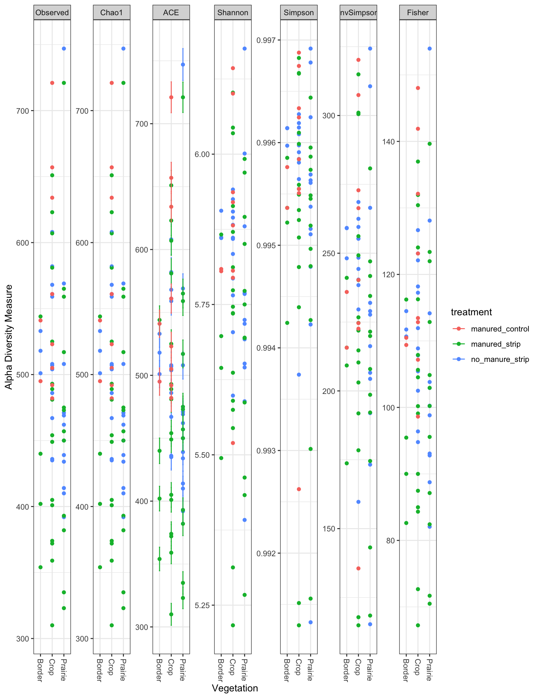
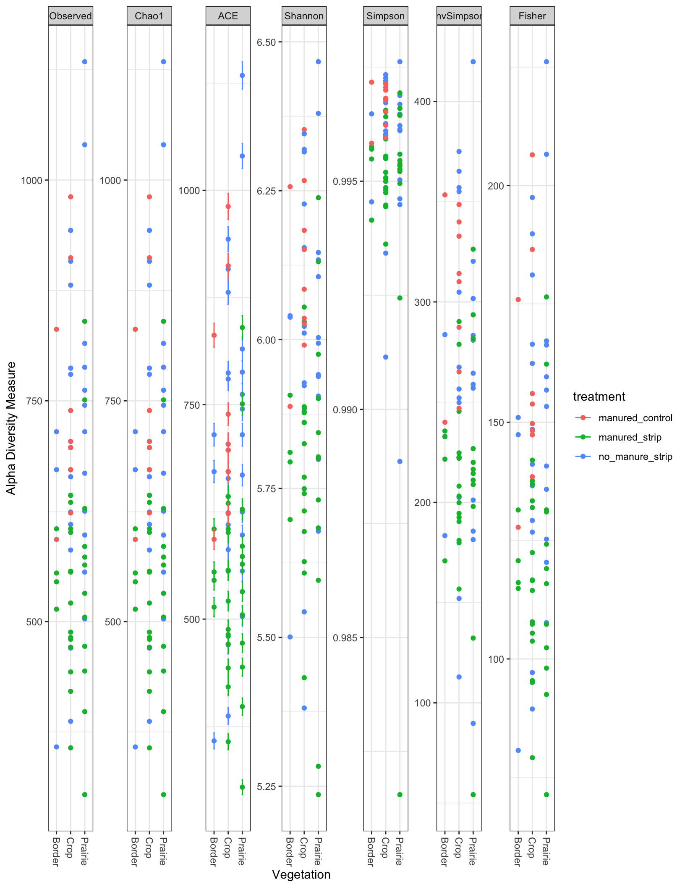
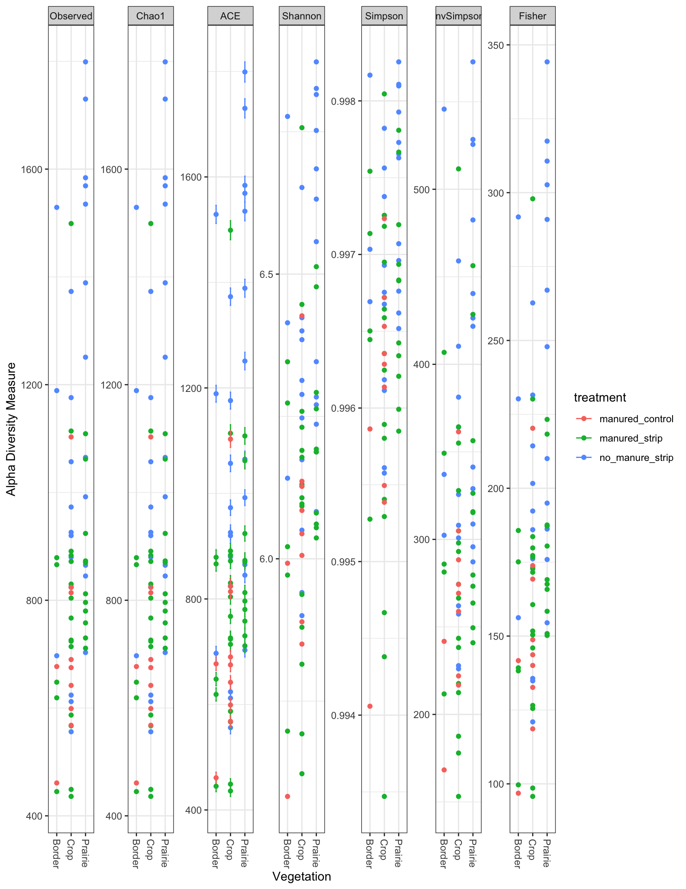
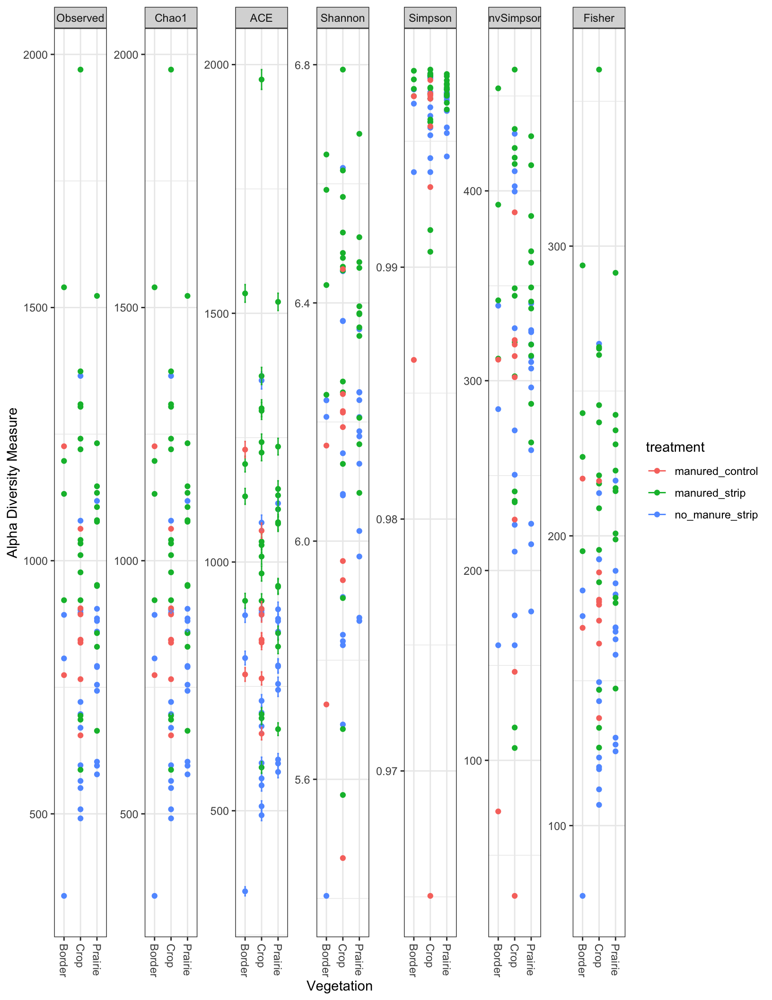
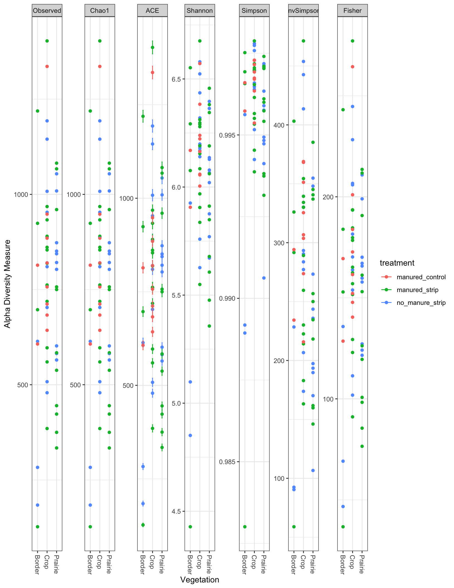
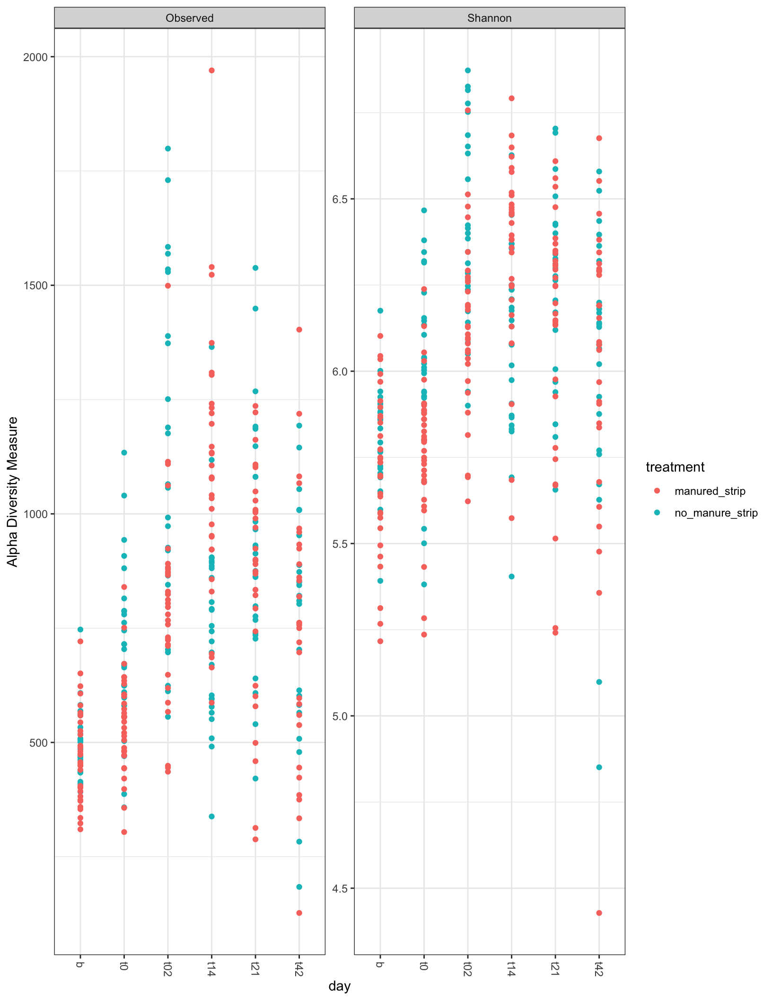
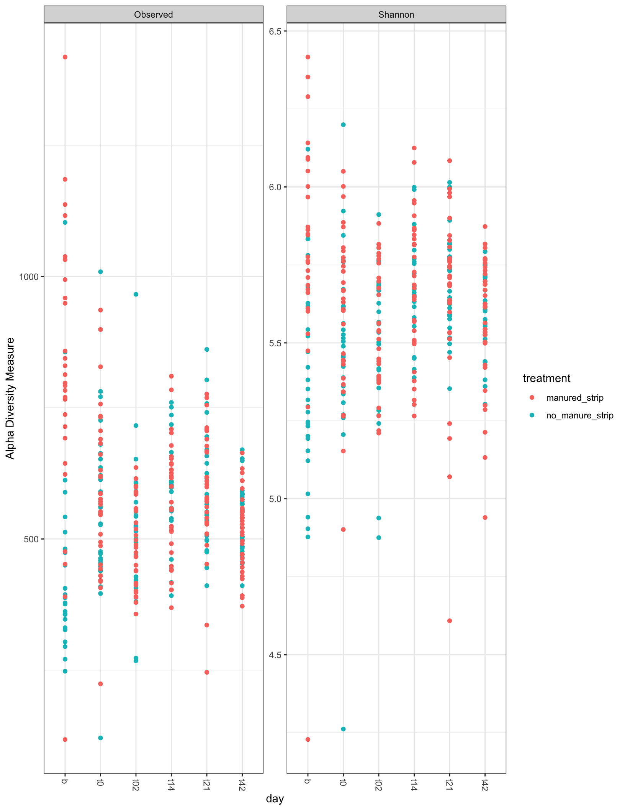

## Loading required package: viridisLitephy <- readRDS("./data/RDS/worle_with_meta.RDS")data <- data.frame(sample_data(phy)) %>%
filter(matrix == "soil") %>%
mutate(Vegetation = case_when(in_plot_location %in% c("s1", "s2", "s3", "s4") ~ "Crop",
in_plot_location %in% c("s6", "s7", "s8", "s9") ~ "Prairie",
TRUE ~ "Border"))
all_data <- data.frame(sample_data(phy)) %>%
full_join(data)## Joining, by = c("id", "PI", "matrix", "plot", "treatment", "day", "depth", "in_plot_location", "block", "runoff_sample")all_data <- all_data %>%
mutate(day = replace(day, day == 't2', "t02"))
sample_names(phy)## [1] "Comp-from-P8-7-10-26-17" "P1-1"
## [3] "P1-3" "P1-5"
## [5] "P1-s1-d1-b" "P1-s1-d1-t0"
## [7] "P1-s1-d1-t14" "P1-s1-d1-t2"
## [9] "P1-s1-d2-t2" "P1-s1-d1-t21"
## [11] "P1-s1-d1-t42" "P1-s1-d2-b"
## [13] "P1-s1-d2-t0" "P1-s1-d2-t14"
## [15] "P1-s1-d2-t21" "P1-s1-d2-t42"
## [17] "P1-s2-d1-b" "P1-s2-d1-t0"
## [19] "P1-s2-d1-t14" "P1-s2-d1-t2"
## [21] "P1-s2-d2-t2" "P1-s2-d1-t21"
## [23] "P1-s2-d2-b" "P1-s2-d2-t0"
## [25] "P1-s2-d2-t14" "P1-s2-d2-t21"
## [27] "P1-s2-d2-t42" "P1-s3-d1-b"
## [29] "P1-s3-d1-t0" "P1-s3-d1-t14"
## [31] "P1-s3-d1-t2" "P1-s3-d2-t2"
## [33] "P1-s3-d1-t21" "P1-s3-d1-t42"
## [35] "P1-s3-d2-b" "P1-s3-d2-t0"
## [37] "P1-s3-d2-t14" "P1-s3-d2-t21"
## [39] "P1-s3-d2-t42" "P1-s4-d1-b"
## [41] "P1-s4-d1-t0" "P1-s4-d1-t14"
## [43] "P1-s4-d1-t2" "P1-s4-d2-t2"
## [45] "P1-s4-d1-t21" "P1-s4-d1-t42"
## [47] "P1-s4-d2-b" "P1-s4-d2-t0"
## [49] "P1-s4-d2-t14" "P1-s4-d2-t21"
## [51] "P1-s4-d2-t42" "P1-s5-d1-b"
## [53] "P1-s5-d1-t0" "P1-s5-d1-t14"
## [55] "P1-s5-d1-t2" "P1-s5-d1-t21"
## [57] "P1-s5-d1-t42" "P1-s5-d2-b"
## [59] "P1-s5-d2-t0" "P1-s5-d2-t14"
## [61] "P1-s5-d2-t2" "P1-s5-d2-t21"
## [63] "P1-s5-d2-t42" "P1-s6-d1-b"
## [65] "P1-s6-d1-t0" "P1-s6-d1-t14"
## [67] "P1-s6-d1-t2" "P1-s6-d1-t21"
## [69] "P1-s6-d1-t42" "P1-s6-d2-b"
## [71] "P1-s6-d2-t0" "P1-s6-d2-t14"
## [73] "P1-s6-d2-t2" "P1-s6-d2-t21"
## [75] "P1-s6-d2-t42" "P1-s7-d1-b"
## [77] "P1-s7-d1-t0" "P1-s7-d1-t14"
## [79] "P1-s7-d1-t2" "P1-s7-d1-t42"
## [81] "P1-s7-d2-b" "P1-s7-d2-t0"
## [83] "P1-s7-d2-t14" "P1-s7-d2-t2"
## [85] "P1-s7-d2-t21" "P1-s7-d2-t42"
## [87] "P1-s8-d1-b" "P1-s8-d1-t0"
## [89] "P1-s8-d1-t14" "P1-s8-d1-t2"
## [91] "P1-s8-d1-t21" "P1-s8-d1-t42"
## [93] "P1-s8-d2-b" "P1-s8-d2-t0"
## [95] "P1-s8-d2-t14" "P1-s8-d2-t2"
## [97] "P1-s8-d2-t21" "P1-s8-d2-t42"
## [99] "P1-s9-d1-b" "P1-s9-d1-t0"
## [101] "P1-s9-d1-t14" "P1-s9-d1-t2"
## [103] "P1-s9-d1-t21" "P1-s9-d1-t42"
## [105] "P1-s9-d2-b" "P1-s9-d2-t0"
## [107] "P1-s9-d2-t14" "P1-s9-d2-t2"
## [109] "P1-s9-d2-t21" "P1-s9-d2-t42"
## [111] "P2-1" "P2-2"
## [113] "P2-3" "P2-4"
## [115] "P2-5" "P2-6"
## [117] "P2-s1-d1-b" "P2-s1-d1-t0"
## [119] "P2-s1-d1-t14" "P2-s1-d1-t2"
## [121] "P2-s1-d1-t21" "P2-s1-d1-t42"
## [123] "P2-s1-d2-b" "P2-s1-d2-t0"
## [125] "P2-s1-d2-t14" "P2-s1-d2-t2"
## [127] "P2-s1-d2-t21" "P2-s1-d2-t42"
## [129] "P2-s2-d1-b" "P2-s2-d1-t0"
## [131] "P2-s2-d1-t14" "P2-s2-d1-t2"
## [133] "P2-s2-d1-t21" "P2-s2-d1-t42"
## [135] "P2-s2-d2-b" "P2-s2-d2-t0"
## [137] "P2-s2-d2-t14" "P2-s2-d2-t2"
## [139] "P2-s2-d2-t21" "P2-s2-d2-t42"
## [141] "P2-s3-d1-b" "P2-s3-d1-t0"
## [143] "P2-s3-d1-t14" "P2-s3-d1-t2"
## [145] "P2-s3-d1-t21" "P2-s3-d2-b"
## [147] "P2-s3-d2-t0" "P2-s3-d2-t14"
## [149] "P2-s3-d2-t2" "P2-s3-d2-t21"
## [151] "P2-s3-d2-t42" "P2-s4-d1-b"
## [153] "P2-s4-d1-t0" "P2-s4-d1-t14"
## [155] "P2-s4-d1-t2" "P2-s4-d1-t21"
## [157] "P2-s4-d1-t42" "P2-s4-d2-b"
## [159] "P2-s4-d2-t0" "P2-s4-d2-t14"
## [161] "P2-s4-d2-t2" "P2-s4-d2-t21"
## [163] "P2-s4-d2-t42" "P2-s5-d1-b"
## [165] "P2-s5-d1-t0" "P2-s5-d1-t14"
## [167] "P2-s5-d1-t2" "P2-s5-d1-t21"
## [169] "P2-s5-d1-t42" "P2-s5-d2-b"
## [171] "P2-s5-d2-t0" "P2-s5-d2-t14"
## [173] "P2-s5-d2-t2" "P2-s5-d2-t21"
## [175] "P2-s5-d2-t42" "P2-s6-d1-b"
## [177] "P2-s6-d1-t0" "P2-s6-d1-t14"
## [179] "P2-s6-d1-t2" "P2-s6-d1-t21"
## [181] "P2-s6-d1-t42" "P2-s6-d2-b"
## [183] "P2-s6-d2-t0" "P2-s6-d2-t14"
## [185] "P2-s6-d2-t2" "P2-s6-d2-t21"
## [187] "P2-s6-d2-t42" "P2-s7-d1-b"
## [189] "P2-s7-d1-t0" "P2-s7-d1-t14"
## [191] "P2-s7-d1-t2" "P2-s7-d1-t21"
## [193] "P2-s7-d1-t42" "P2-s7-d2-b"
## [195] "P2-s7-d2-t0" "P2-s7-d2-t14"
## [197] "P2-s7-d2-t2" "P2-s7-d2-t21"
## [199] "P2-s7-d2-t42" "P2-s8-d1-b"
## [201] "P2-s8-d1-t0" "P2-s8-d1-t14"
## [203] "P2-s8-d1-t2" "P2-s8-d1-t21"
## [205] "P2-s8-d1-t42" "P2-s8-d2-b"
## [207] "P2-s8-d2-t0" "P2-s8-d2-t14"
## [209] "P2-s8-d2-t2" "P2-s8-d2-t21"
## [211] "P2-s8-d2-t42" "P2-s9-d1-b"
## [213] "P2-s9-d1-t0" "P2-s9-d1-t14"
## [215] "P2-s9-d1-t2" "P2-s9-d1-t21"
## [217] "P2-s9-d2-b" "P2-s9-d2-t0"
## [219] "P2-s9-d2-t14" "P2-s9-d2-t2"
## [221] "P2-s9-d2-t21" "P2-s9-d2-t42"
## [223] "P3-1" "P3-2"
## [225] "P3-3" "P3-4"
## [227] "P3-5" "P3-6"
## [229] "P3-s1-d1-b" "P3-s1-d1-t0"
## [231] "P3-s1-d1-t14" "P3-s1-d1-t21"
## [233] "P3-s1-d1-t42" "P3-s1-d2-b"
## [235] "P3-s1-d2-t0" "P3-s1-d2-t14"
## [237] "P3-s1-d2-t2" "P3-s1-d2-t21"
## [239] "P3-s1-d2-t42" "P3-s2-d1-b"
## [241] "P3-s2-d1-t0" "P3-s2-d1-t14"
## [243] "P3-s2-d1-t2" "P3-s2-d1-t21"
## [245] "P3-s2-d1-t42" "P3-s2-d2-b"
## [247] "P3-s2-d2-t0" "P3-s2-d2-t14"
## [249] "P3-s2-d2-t2" "P3-s2-d2-t21"
## [251] "P3-s2-d2-t42" "P3-s3-d1-b"
## [253] "P3-s3-d1-t0" "P3-s3-d1-t14"
## [255] "P3-s3-d1-t2" "P3-s3-d1-t21"
## [257] "P3-s3-d1-t42" "P3-s3-d2-b"
## [259] "P3-s3-d2-t0" "P3-s3-d2-t14"
## [261] "P3-s3-d2-t2" "P3-s3-d2-t21"
## [263] "P3-s3-d2-t42" "P3-s4-d1-b"
## [265] "P3-s4-d1-t0" "P3-s4-d1-t14"
## [267] "P3-s4-d1-t2" "P3-s4-d1-t21"
## [269] "P3-s4-d1-t42" "P3-s4-d2-b"
## [271] "P3-s4-d2-t0" "P3-s4-d2-t14"
## [273] "P3-s4-d2-t2" "P3-s4-d2-t21"
## [275] "P3-s4-d2-t42" "P3-s5-d1-b"
## [277] "P3-s5-d1-t0" "P3-s5-d1-t14"
## [279] "P3-s5-d1-t2" "P3-s5-d1-t21"
## [281] "P3-s5-d1-t42" "P3-s5-d2-b"
## [283] "P3-s5-d2-t0" "P3-s5-d2-t2"
## [285] "P3-s5-d2-t21" "P3-s5-d2-t42"
## [287] "P3-s6-d1-b" "P3-s6-d1-t0"
## [289] "P3-s6-d1-t14" "P3-s6-d1-t2"
## [291] "P3-s6-d1-t21" "P3-s6-d1-t42"
## [293] "P3-s6-d2-b" "P3-s6-d2-t0"
## [295] "P3-s6-d2-t14" "P3-s6-d2-t2"
## [297] "P3-s6-d2-t21" "P3-s6-d2-t42"
## [299] "P3-s7-d1-b" "P3-s7-d1-t0"
## [301] "P3-s7-d1-t14" "P3-s7-d1-t2"
## [303] "P3-s7-d1-t21" "P3-s7-d1-t42"
## [305] "P3-s7-d2-b" "P3-s7-d2-t0"
## [307] "P3-s7-d2-t14" "P3-s7-d2-t2"
## [309] "P3-s7-d2-t21" "P3-s7-d2-t42"
## [311] "P3-s8-d1-b" "P3-s8-d1-t0"
## [313] "P3-s8-d1-t14" "P3-s8-d1-t2"
## [315] "P3-s8-d1-t21" "P3-s8-d2-b"
## [317] "P3-s8-d2-t0" "P3-s8-d2-t14"
## [319] "P3-s8-d2-t2" "P3-s8-d2-t21"
## [321] "P3-s8-d2-t42" "P3-s9-d1-b"
## [323] "P3-s9-d1-t0" "P3-s9-d1-t14"
## [325] "P3-s9-d1-t2" "P3-s9-d1-t21"
## [327] "P3-s9-d1-t42" "P3-s9-d2-b"
## [329] "P3-s9-d2-t0" "P3-s9-d2-t14"
## [331] "P3-s9-d2-t2" "P3-s9-d2-t21"
## [333] "P3-s9-d2-t42" "P4-1"
## [335] "P4-2" "P4-3"
## [337] "P4-4" "P4-5"
## [339] "P4-6" "P4-s1-d1-b"
## [341] "P4-s1-d1-t0" "P4-s1-d1-t2"
## [343] "P4-s1-d1-t21" "P4-s1-d1-t42"
## [345] "P4-s1-d2-b" "P4-s1-d2-t0"
## [347] "P4-s1-d2-t14" "P4-s1-d2-t2"
## [349] "P4-s1-d2-t21" "P4-s1-d2-t42"
## [351] "P4-s2-d1-b" "P4-s2-d1-t0"
## [353] "P4-s2-d1-t14" "P4-s2-d1-t2"
## [355] "P4-s2-d1-t21" "P4-s2-d1-t42"
## [357] "P4-s2-d2-b" "P4-s2-d2-t0"
## [359] "P4-s2-d2-t14" "P4-s2-d2-t2"
## [361] "P4-s2-d2-t21" "P4-s2-d2-t42"
## [363] "P4-s3-d1-b" "P4-s3-d1-t0"
## [365] "P4-s3-d1-t14" "P4-s3-d1-t2"
## [367] "P4-s3-d1-t21" "P4-s3-d1-t42"
## [369] "P4-s3-d2-b" "P4-s3-d2-t0"
## [371] "P4-s3-d2-t14" "P4-s3-d2-t2"
## [373] "P4-s3-d2-t21" "P4-s3-d2-t42"
## [375] "P4-s4-d1-b" "P4-s4-d1-t0"
## [377] "P4-s4-d1-t2" "P4-s4-d1-t21"
## [379] "P4-s4-d1-t42" "P4-s4-d2-b"
## [381] "P4-s4-d2-t0" "P4-s4-d2-t14"
## [383] "P4-s4-d2-t2" "P4-s4-d2-t21"
## [385] "P4-s4-d2-t42" "P4-s5-d1-b"
## [387] "P4-s5-d1-t0" "P4-s5-d1-t14"
## [389] "P4-s5-d1-t2" "P4-s5-d1-t21"
## [391] "P4-s5-d1-t42" "P4-s5-d2-b"
## [393] "P4-s5-d2-t0" "P4-s5-d2-t14"
## [395] "P4-s5-d2-t2" "P4-s5-d2-t21"
## [397] "P4-s5-d2-t42" "P4-s6-d1-b"
## [399] "P4-s6-d1-t0" "P4-s6-d1-t14"
## [401] "P4-S6-d1-t2" "P4-s6-d1-t21"
## [403] "P4-s6-d1-t42" "P4-s6-d2-t0"
## [405] "P4-s6-d2-t14" "P4-s6-d2-t2"
## [407] "P4-s6-d2-t21" "P4-s6-d2-t42"
## [409] "P4-s7-d1-b" "P4-s7-d1-t0"
## [411] "P4-s7-d1-t14" "P4-s7-d1-t2"
## [413] "P4-s7-d1-t21" "P4-s7-d1-t42"
## [415] "P4-s7-d2-b" "P4-s7-d2-t0"
## [417] "P4-s7-d2-t14" "P4-s7-d2-t2"
## [419] "P4-s7-d2-t21" "P4-s7-d2-t42"
## [421] "P4-s8-d1-b" "P4-s8-d1-t0"
## [423] "P4-s8-d1-t14" "P4-s8-d1-t2"
## [425] "P4-s8-d1-t21" "P4-s8-d1-t42"
## [427] "P4-s8-d2-b" "P4-s8-d2-t0"
## [429] "P4-s8-d2-t14" "P4-s8-d2-t2"
## [431] "P4-s8-d2-t21" "P4-s8-d2-t42"
## [433] "P4-s9-d1-b" "P4-s9-d1-t0"
## [435] "P4-s9-d1-t14" "P4-s9-d1-t2"
## [437] "P4-s9-d1-t21" "P4-s9-d1-t42"
## [439] "P4-s9-d2-b" "P4-s9-d2-t0"
## [441] "P4-s9-d2-t14" "P4-s9-d2-t2"
## [443] "P4-s9-d2-t21" "P4-s9-d2-t42"
## [445] "P5-1" "P5-2"
## [447] "P5-3" "P5-4"
## [449] "P5-5" "P5-6"
## [451] "P5-s1-d1-b" "P5-s1-d1-t0"
## [453] "P5-s1-d1-t14" "P5-s1-d1-t2"
## [455] "P5-s1-d1-t21" "P5-s1-d2-b"
## [457] "P5-s1-d2-t0" "P5-s1-d2-t14"
## [459] "P5-s1-d2-t2" "P5-s1-d2-t21"
## [461] "P5-s1-d2-t42" "P5-s2-d1-b"
## [463] "P5-s2-d1-t0" "P5-s2-d1-t14"
## [465] "P5-s2-d1-t2" "P5-s2-d1-t21"
## [467] "P5-s2-d1-t42" "P5-s2-d2-b"
## [469] "P5-s2-d2-t0" "P5-s2-d2-t14"
## [471] "P5-s2-d2-t2" "P5-s2-d2-t21"
## [473] "P5-s2-d2-t42" "P5-s3-d1-b"
## [475] "P5-s3-d1-t0" "P5-s3-d1-t14"
## [477] "P5-s3-d1-t2" "P5-s3-d1-t21"
## [479] "P5-s3-d1-t42" "P5-s3-d2-b"
## [481] "P5-s3-d2-t0" "P5-s3-d2-t14"
## [483] "P5-s3-d2-t2" "P5-s3-d2-t21"
## [485] "P5-s3-d2-t42" "P5-s4-d1-b"
## [487] "P5-s4-d1-t0" "P5-s4-d1-t14"
## [489] "P5-s4-d1-t2" "P5-s4-d1-t21"
## [491] "P5-s4-d1-t42" "P5-s4-d2-b"
## [493] "P5-s4-d2-t0" "P5-s4-d2-t14"
## [495] "P5-s4-d2-t2" "P5-s4-d2-t21"
## [497] "P5-s4-d2-t42" "P5-s5-d1-b"
## [499] "P5-s5-d1-t0" "P5-s5-d1-t14"
## [501] "P5-s5-d1-t2" "P5-s5-d1-t21"
## [503] "P5-s5-d1-t42" "P5-s5-d2-t0"
## [505] "P5-s5-d2-t14" "P5-s5-d2-t2"
## [507] "P5-s5-d2-t21" "P5-s5-d2-t42"
## [509] "P5-s6-d1-b" "P5-s6-d1-t0"
## [511] "P5-s6-d1-t14" "P5-s6-d1-t2"
## [513] "P5-s6-d1-t21" "P5-s6-d1-t42"
## [515] "P5-s6-d2-b" "P5-s6-d2-t0"
## [517] "P5-s6-d2-t14" "P5-s6-d2-t2"
## [519] "P5-s6-d2-t21" "P5-s6-d2-t42"
## [521] "P5-s7-d1-b" "P5-s7-d1-t0"
## [523] "P5-s7-d1-t14" "P5-s7-d1-t2"
## [525] "P5-s7-d1-t21" "P5-s7-d2-b"
## [527] "P5-s7-d2-t0" "P5-s7-d2-t14"
## [529] "P5-s7-d2-t21" "P5-s7-d2-t42"
## [531] "P5-s8-d1-b" "P5-s8-d1-t0"
## [533] "P5-s8-d1-t14" "P5-s8-d1-t2"
## [535] "P5-s8-d1-t21" "P5-s8-d1-t42"
## [537] "P5-s8-d2-b" "P5-s8-d2-t0"
## [539] "P5-s8-d2-t14" "P5-s8-d2-t2"
## [541] "P5-s8-d2-t21" "P5-s8-d2-t42"
## [543] "P5-s9-d1-b" "P5-s9-d1-t0"
## [545] "P5-s9-d1-t14" "P5-s9-d1-t2"
## [547] "P5-s9-d1-t21" "P5-s9-d1-t42"
## [549] "P5-s9-d2-b" "P5-s9-d2-t0"
## [551] "P5-s9-d2-t14" "P5-s9-d2-t2"
## [553] "P5-s9-d2-t21" "P5-s9-d2-t42"
## [555] "P6-1" "P6-2"
## [557] "P6-3" "P6-4"
## [559] "P6-5" "P6-6"
## [561] "P6-s1-d1-b" "P6-s1-d1-t0"
## [563] "P6-s1-d1-t14" "P6-s1-d1-t2"
## [565] "P6-s1-d1-t21" "P6-s1-d1-t42"
## [567] "P6-s1-d2-b" "P6-s1-d2-t0"
## [569] "P6-s1-d2-t14" "P6-s1-d2-t2"
## [571] "P6-s1-d2-t21" "P6-s1-d2-t42"
## [573] "P6-s2-d1-b" "P6-s2-d1-t0"
## [575] "P6-s2-d1-t14" "P6-s2-d1-t2"
## [577] "P6-s2-d1-t21" "P6-s2-d1-t42"
## [579] "P6-s2-d2-b" "P6-s2-d2-t0"
## [581] "P6-s2-d2-t14" "P6-s2-d2-t2"
## [583] "P6-s2-d2-t21" "P6-s2-d2-t42"
## [585] "P6-s3-d1-b" "P6-s3-d1-t0"
## [587] "P6-s3-d1-t14" "P6-s3-d1-t2"
## [589] "P6-s3-d1-t21" "P6-s3-d2-b"
## [591] "P6-s3-d2-t0" "P6-s3-d2-t14"
## [593] "P6-s3-d2-t2" "P6-s3-d2-t21"
## [595] "P6-s3-d2-t42" "P6-s4-d1-b"
## [597] "P6-s4-d1-t0" "P6-s4-d1-t14"
## [599] "P6-s4-d1-t2" "P6-s4-d1-t42"
## [601] "P6-s4-d2-t0" "P6-s4-d2-t14"
## [603] "P6-s4-d2-t2" "P6-s4-d2-t21"
## [605] "P6-s4-d2-t42" "P6-s5-d1-b"
## [607] "P6-s5-d1-t0" "P6-s5-d1-t14"
## [609] "P6-s5-d1-t2" "P6-s5-d1-t21"
## [611] "P6-s5-d1-t42" "P6-s5-d2-b"
## [613] "P6-s5-d2-t0" "P6-s5-d2-t14"
## [615] "P6-s5-d2-t2" "P6-s5-d2-t21"
## [617] "P6-s5-d2-t42" "P6-s6-d1-b"
## [619] "P6-s6-d1-t0" "P6-s6-d1-t14"
## [621] "P6-s6-d1-t2" "P6-s6-d1-t21"
## [623] "P6-s6-d1-t42" "P6-s6-d2-b"
## [625] "P6-s6-d2-t0" "P6-s6-d2-t14"
## [627] "P6-s6-d2-t2" "P6-s6-d2-t21"
## [629] "P6-s6-d2-t42" "P6-s7-d1-b"
## [631] "P6-s7-d1-t0" "P6-s7-d1-t14"
## [633] "P6-s7-d1-t2" "P6-s7-d1-t21"
## [635] "P6-s7-d1-t42" "P6-s7-d2-b"
## [637] "P6-s7-d2-t0" "P6-s7-d2-t14"
## [639] "P6-s7-d2-t2" "P6-s7-d2-t21"
## [641] "P6-s7-d2-t42" "P6-s8-d1-b"
## [643] "P6-s8-d1-t0" "P6-s8-d1-t14"
## [645] "P6-s8-d1-t2" "P6-s8-d1-t21"
## [647] "P6-s8-d1-t42" "P6-s8-d2-b"
## [649] "P6-s8-d2-t0" "P6-s8-d2-t14"
## [651] "P6-s8-d2-t2" "P6-s8-d2-t21"
## [653] "P6-s8-d2-t42" "P6-s9-d1-b"
## [655] "P6-s9-d1-t0" "P6-s9-d1-t14"
## [657] "P6-s9-d1-t2" "P6-s9-d1-t21"
## [659] "P6-s9-d1-t42" "P6-s9-d2-b"
## [661] "P6-s9-d2-t0" "P6-s9-d2-t14"
## [663] "P6-s9-d2-t2" "P6-s9-d2-t21"
## [665] "P6-s9-d2-t42" "P7-1"
## [667] "P7-2" "P7-3"
## [669] "P7-4" "P7-5"
## [671] "P7-6" "P7-s1-d1-b"
## [673] "P7-s1-d1-t0" "P7-s1-d1-t14"
## [675] "P7-s1-d1-t2" "P7-s1-d2-b"
## [677] "P7-s1-d2-t0" "P7-s1-d2-t14"
## [679] "P7-s1-d2-t2" "P7-s1-d2-t21"
## [681] "P7-s1-d2-t42" "P7-s2-d1-b"
## [683] "P7-s2-d1-t0" "P7-s2-d1-t14"
## [685] "P7-s2-d1-t2" "P7-s2-d1-t21"
## [687] "P7-s2-d1-t42" "P7-s2-d2-b"
## [689] "P7-s2-d2-t0" "P7-s2-d2-t14"
## [691] "P7-s2-d2-t2" "P7-s2-d2-t21"
## [693] "P7-s2-d2-t42" "P7-s3-d1-b"
## [695] "P7-s3-d1-t0" "P7-s3-d1-t14"
## [697] "P7-s3-d1-t2" "P7-s3-d1-t21"
## [699] "P7-s3-d1-t42" "P7-s3-d2-t0"
## [701] "P7-s3-d2-t14" "P7-s3-d2-t2"
## [703] "P7-s3-d2-t21" "P7-s3-d2-t42"
## [705] "P7-s4-d1-b" "P7-s4-d1-t0"
## [707] "P7-s4-d1-t14" "P7-s4-d1-t2"
## [709] "P7-s4-d1-t21" "P7-s4-d1-t42"
## [711] "P7-s4-d2-b" "P7-s4-d2-t0"
## [713] "P7-s4-d2-t14" "P7-s4-d2-t2"
## [715] "P7-s4-d2-t21" "P7-s4-d2-t42"
## [717] "P7-s5-d1-b" "P7-s5-d1-t0"
## [719] "P7-s5-d1-t14" "P7-s5-d1-t2"
## [721] "P7-s5-d1-t21" "P7-s5-d1-t42"
## [723] "P7-s5-d2-b" "P7-s5-d2-t0"
## [725] "P7-s5-d2-t14" "P7-s5-d2-t2"
## [727] "P7-s5-d2-t21" "P7-s5-d2-t42"
## [729] "P8-1" "P8-2"
## [731] "P8-3" "P8-4"
## [733] "P8-5" "P8-6"
## [735] "P8-s1-d1-b" "P8-s1-d1-t0"
## [737] "P8-s1-d1-t14" "P8-s1-d1-t2"
## [739] "P8-s1-d1-t21" "P8-s1-d1-t42"
## [741] "P8-s1-d2-b" "P8-s1-d2-t0"
## [743] "P8-s1-d2-t14" "P8-s1-d2-t2"
## [745] "P8-s1-d2-t21" "P8-s1-d2-t42"
## [747] "P8-s2-d1-b" "P8-s2-d1-t0"
## [749] "P8-s2-d1-t14" "P8-s2-d1-t2"
## [751] "P8-s2-d1-t21" "P8-s2-d1-t42"
## [753] "P8-s2-d2-b" "P8-s2-d2-t0"
## [755] "P8-s2-d2-t14" "P8-s2-d2-t2"
## [757] "P8-s2-d2-t42" "P8-s3-d1-b"
## [759] "P8-s3-d1-t0" "P8-s3-d1-t14"
## [761] "P8-s3-d1-t2" "P8-s3-d1-t21"
## [763] "P8-s3-d1-t42" "P8-s3-d2-b"
## [765] "P8-s3-d2-t0" "P8-s3-d2-t14"
## [767] "P8-s3-d2-t2" "P8-s3-d2-t21"
## [769] "P8-s3-d2-t42" "P8-s4-d1-b"
## [771] "P8-s4-d1-t0" "P8-s4-d1-t14"
## [773] "P8-s4-d1-t2" "P8-s4-d1-t21"
## [775] "P8-s4-d1-t42" "P8-s4-d2-b"
## [777] "P8-s4-d2-t0" "P8-s4-d2-t2"
## [779] "P8-s4-d2-t21" "P8-s4-d2-t42"
## [781] "P8-s5-d1-b" "P8-s5-d1-t0"
## [783] "P8-s5-d1-t14" "P8-s5-d1-t2"
## [785] "P8-s5-d1-t21" "P8-s5-d1-t42"
## [787] "P8-s5-d2-b" "P8-s5-d2-t0"
## [789] "P8-s5-d2-t14" "P8-s5-d2-t2"
## [791] "P8-s5-d2-t21" "P8-s5-d2-t42"
## [793] "P9-1" "P9-2"
## [795] "P9-3" "P9-4"
## [797] "P9-5" "P9-6"
## [799] "P9-s1-d1-b" "P9-s1-d1-t0"
## [801] "P9-s1-d1-t14" "P9-s1-d1-t2"
## [803] "P9-s1-d1-t42" "P9-s1-d2-b"
## [805] "P9-s1-d2-t0" "P9-s1-d2-t14"
## [807] "P9-s1-d2-t2" "P9-s1-d2-t21"
## [809] "P9-s1-d2-t42" "P9-s2-d1-b"
## [811] "P9-s2-d1-t0" "P9-s2-d1-t14"
## [813] "P9-s2-d1-t2" "P9-s2-d1-t21"
## [815] "P9-s2-d1-t42" "P9-s2-d2-b"
## [817] "P9-s2-d2-t0" "P9-s2-d2-t14"
## [819] "P9-s2-d2-t2" "P9-s2-d2-t21"
## [821] "P9-s2-d2-t42" "P9-s3-d1-b"
## [823] "P9-s3-d1-t0" "P9-s3-d1-t14"
## [825] "P9-s3-d1-t2" "P9-s3-d1-t21"
## [827] "P9-s3-d1-t42" "P9-s3-d2-b"
## [829] "P9-s3-d2-t14" "P9-s3-d2-t2"
## [831] "P9-s3-d2-t21" "P9-s3-d2-t42"
## [833] "P9-s4-d1-b" "P9-s4-d1-t0"
## [835] "P9-s4-d1-t14" "P9-s4-d1-t2"
## [837] "P9-s4-d1-t21" "P9-s4-d1-t42"
## [839] "P9-s4-d2-b" "P9-s4-d2-t0"
## [841] "P9-s4-d2-t14" "P9-s4-d2-t2"
## [843] "P9-s4-d2-t21" "P9-s4-d2-t42"
## [845] "P9-s5-d1-b" "P9-s5-d1-t0"
## [847] "P9-s5-d1-t14" "P9-s5-d1-t2"
## [849] "P9-s5-d1-t21" "P9-s5-d1-t42"
## [851] "P9-s5-d2-b" "P9-s5-d2-t0"
## [853] "P9-s5-d2-t14" "P9-s5-d2-t2"
## [855] "P9-s5-d2-t21" "P9-s5-d2-t42"
## [857] "PMB1A1" "PMB1D1"
## [859] "PMB2B1" "PMB2E2"
## [861] "PMB3C1" "PMB3F1"rownames(all_data) <- all_data$id
sample_data(phy) <- all_datacolnames(phy@sam_data)## [1] "id" "PI" "matrix"
## [4] "plot" "treatment" "day"
## [7] "depth" "in_plot_location" "block"
## [10] "runoff_sample" "Vegetation"unique(phy@sam_data$matrix)## [1] "water" "soil" "manure"unique(phy@sam_data$day)## [1] "0" "b" "t0" "t14" "t02" "t21" "t42"unique(phy@sam_data$depth)## [1] NA "d1" "d2"unique(phy@sam_data$treatment)## [1] "manured_control" "no_manure_strip" "manured_strip" NAbase_all_measures <- subset_samples(phy, matrix == "soil" & day == "b" & depth == "d1")
min(taxa_sums(base_all_measures))## [1] 0plot_richness(base_all_measures, x = "Vegetation", color = "treatment")## Warning in estimate_richness(physeq, split = TRUE, measures = measures): The data you have provided does not have
## any singletons. This is highly suspicious. Results of richness
## estimates (for example) are probably unreliable, or wrong, if you have already
## trimmed low-abundance taxa from the data.
##
## We recommended that you find the un-trimmed data and retry.## Warning: Removed 345 rows containing missing values (geom_errorbar).
t0_all_measures <- subset_samples(phy, matrix == "soil" & day == "t0" & depth == "d1")
plot_richness(t0_all_measures, x = "Vegetation", color = "treatment")## Warning: Removed 345 rows containing missing values (geom_errorbar).
t2_all_measures <- subset_samples(phy, matrix == "soil" & day == "t02" & depth == "d1")
plot_richness(t2_all_measures, x = "Vegetation", color = "treatment")## Warning: Removed 340 rows containing missing values (geom_errorbar).
t14_all_measures <- subset_samples(phy, matrix == "soil" & day == "t14" & depth == "d1")
plot_richness(t14_all_measures, x = "Vegetation", color = "treatment")## Warning: Removed 335 rows containing missing values (geom_errorbar).
t42_all_measures <- subset_samples(phy, matrix == "soil" & day == "t42" & depth == "d1")
plot_richness(t42_all_measures, x = "Vegetation", color = "treatment")## Warning in estimate_richness(physeq, split = TRUE, measures = measures): The data you have provided does not have
## any singletons. This is highly suspicious. Results of richness
## estimates (for example) are probably unreliable, or wrong, if you have already
## trimmed low-abundance taxa from the data.
##
## We recommended that you find the un-trimmed data and retry.## Warning: Removed 305 rows containing missing values (geom_errorbar).
all.days.prairie.appended.d1 <- subset_samples(phy, matrix == "soil" & depth == "d1" & treatment %in% c("no_manure_strip", "manured_strip"))
all.days.prairie.appended.d2 <- subset_samples(phy, matrix == "soil" & depth == "d2" & treatment %in% c("no_manure_strip", "manured_strip"))
plot_richness(all.days.prairie.appended.d1, x = "day", color = "treatment", measures = c("Observed", "Shannon"))
plot_richness(all.days.prairie.appended.d2, x = "day", color = "treatment", measures = c("Observed", "Shannon"))